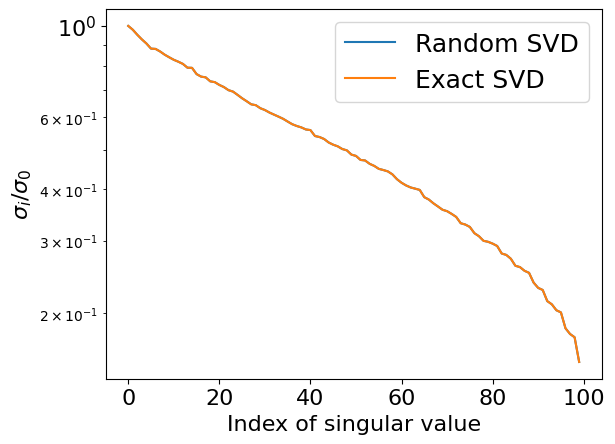

where A is of size m \times n, U is of size m \times k and V is of size n \times k.
We have already known that the complexity of rank-k approximation is O(mnk)
How can we reduce this complexity?
Assume we know orthogonal matrix Q of size m \times k such that
A \approx Q Q^{\top}A
In other words, columns of Q represent orthogonal basis in the column space of matrix A
Then the following deterministic steps can give the factors U, \Sigma and V corresponding of SVD of matrix A
Form k \times n matrix B = Q^{\top}A
Compute SVD of small matrix B = \hat{U}\Sigma V^{\top}
Update left singular vectors U = Q\hat{U}
If k \ll \min(m, n) then these steps can be performed fast
If Q forms exact basis in column space of A, then U, \Sigma and V are also exact!
So, how to compose matrix Q?
Randomized approximation of basis in column space of A
The main approach
Generate k + p Gaussian vectors of size m and form matrix G
Compute Y = AG
Compute QR decomposition of Y and use the resulting matrix Q as an approximation of the basis
Parameter p is called oversampling parameter and is needed to improve approximation of the leading k left singular vectors later
Computing of Y can be done in parallel
Here we need only matvec function for matrix A rather than its elements as a 2D array - black-box concept!
Instead of Gaussian random matrix one can use more structured but still random matrix that can be multiplied by A fast
import matplotlib.pyplot as pltimport numpy as npn =1000k =100m =200# Lowrank matrixA = np.random.randn(n, k)B = np.random.randn(k, m)A = A @ B# Random matrix# A = np.random.randn(n, m)def randomized_svd(A, rank, p): m, n = A.shape G = np.random.randn(n, rank + p) Y = A @ G Q, _ = np.linalg.qr(Y) B = Q.T @ A u, S, V = np.linalg.svd(B) U = Q @ ureturn U, S, Vrank =100p =5U, S, V = randomized_svd(A, rank, p)print("Error from randomized SVD", np.linalg.norm(A - U[:, :rank] * S[None, :rank] @ V[:rank, :]))plt.semilogy(S[:rank] / S[0], label="Random SVD")u, s, v = np.linalg.svd(A)print("Error from exact SVD", np.linalg.norm(A - u[:, :rank] * s[None, :rank] @ v[:rank, :]))plt.semilogy(s[:rank] / s[0], label="Exact SVD")plt.legend(fontsize=18)plt.xticks(fontsize=16)plt.yticks(fontsize=16)plt.ylabel("$\sigma_i / \sigma_0$", fontsize=16)_ = plt.xlabel("Index of singular value", fontsize=16)
Error from randomized SVD 1.7704601563939492e-11
Error from exact SVD 1.195330542835496e-11

import scipy.sparse.linalg as spsplin# More details about Facebook package for computing randomized SVD is here: https://research.fb.com/blog/2014/09/fast-randomized-svd/ import fbpcan =1000m =200A = np.random.randn(n, m)k =10p =10%timeit spsplin.svds(A, k=k)%timeit randomized_svd(A, k, p)%timeit fbpca.pca(A, k=k, raw=False)
60.5 ms ± 11.5 ms per loop (mean ± std. dev. of 7 runs, 10 loops each)
8.07 ms ± 3.32 ms per loop (mean ± std. dev. of 7 runs, 100 loops each)
3.09 ms ± 177 µs per loop (mean ± std. dev. of 7 runs, 100 loops each)
Convergence theorem
The averaged error of the presented algorithm, where k is target rank and p is oversampling parameter, is the following - in Frobenius norm
347 ms ± 60.1 ms per loop (mean ± std. dev. of 7 runs, 1 loop each)
82.3 ms ± 6.93 ms per loop (mean ± std. dev. of 7 runs, 10 loops each)
68.7 ms ± 4.99 ms per loop (mean ± std. dev. of 7 runs, 10 loops each)
118 ms ± 6.57 ms per loop (mean ± std. dev. of 7 runs, 10 loops each)
176 ms ± 13.9 ms per loop (mean ± std. dev. of 7 runs, 10 loops each)
352 ms ± 43.3 ms per loop (mean ± std. dev. of 7 runs, 1 loop each)
Convergence theorem
The presented above method provides the following upper bound
A cheap update, but the analysis is quite complicated.
You can recognize in this method stochastic gradient descent with specific step size equal to \frac{1}{\|a_i\|_2^2} for every sample
Convergence theorem
Assume we generate i according to the distribution over the all available indices proportional to norms of the rows, i.e. \mathbb{P}[i = k] = \frac{\|a_k\|_2^2}{\| A \|^2_F}. This method is called Randomized Kaczmarz method (RKM)
Why sampling strategy is important here?
Investigation of the best sampling is provided here
If the overdetermined linear system is consistent, then
where \kappa_F(A) = \frac{\| A \|_F}{\sigma_{\min}(A)} and \sigma_{\min}(A) is a minimal non-zero singular value of A. This result was presented in (Strohmer and Vershynin, 2009)
If the overdetermined linear system is inconsistent, then
Here a_{:, j} denotes the j-th column of A and a_{i, :} denotes the i-th row of A
If z^0 \in f + \mathrm{range}(A) and x^0 \in \mathrm{range}(A^\top), then REK converges exponentially to A^{\dagger}f
Sampling and sketching
Sampling of a particular row can be considered as a particular case of more general approach called sketching
Idea: replace matrix A with another matrix SA, where matrix SA has significantly smaller number of rows but preserves some important properties of matrix A
Possible choices:
random projection
random row selection
Example: linear least squares problem \|Ax - b\|_2^2 \to \min_x transforms to \| (SA)y - Sb \|_2^2 \to \min_y and we expect that x \approx y
Blendenpick solver is based on that idea and outperforms LAPACK routine